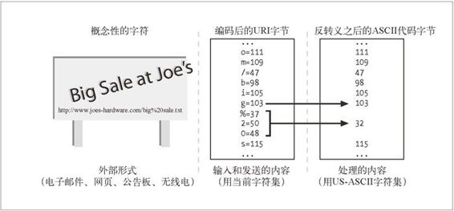

16.5 国际化的 URI
直到今天，URI 还没有为国际化提供足够的支持。除了少数（定义得很糟的）例外，URI 如今还是由 US-ASCII 字符的一个子集组成的。人们正在努力使主机名和 URL 的路径中能包含更丰富的集合中的字符，但直到现在，这些标准还没有被广泛接受和部署。现在让我们来回顾一下当前的一些尝试。
16.5.1 全球性的可转抄能力与有意义的字符的较量
URI 的设计者们希望世界上每个人都能通过电子邮件、电话、公告板，甚至无线电来共享 URI。他们还希望 URI 容易使用和记忆，但这两个目标是相互冲突的。
为了让世界各地的人们都能够便捷地输入、操控，以及共享 URI，设计者们为 URI 选择了常用字符的一个很有限的子集（基本的拉丁字母表中的字母、数字以及少数特殊符号）。世界上绝大多数软件和键盘都支持这个小的字符集合。
但不幸的是，限制了字符集的话，URI 就无法被全球的人们方便地使用和记忆。世界上有很大一部分人甚至都不认识拉丁字母，他们几乎无法把 URI 当作抽象模式来记忆。
URI 的设计者们觉得确保资源标识符的可转抄能力（transcribability）和共享能力比让它们由最有意义的字符组成更加重要，因此（如今的）URI 基本上是由 ASCII 字符的受限子集构成的。
16.5.2 URI字符集合
URI 中允许出现的 US-ASCII 字符的子集，可以被分成保留、未保留*以及转义字符这几类。未保留的字符可用于 URI 允许其出现的任何部分。保留的字符在很多 URI 中都有特殊的含义，因此一般来说不能使用它们。表 16-7 中列出了全部未保留、保留，以及转义字符。
表16-7 URI字符语法
| 字符类别 | 字符列表 |
|---|---|
| 未保留 | [A-Za-z0-9] | "-" | "_" | "." | "!" | "~" | "*" | " ' " | "(" | ")" |
| 保留 | ";" | "/" | "?" | ":" | "@" | "&" | "=" | "" | "$" | "," |
| 转义 | "%" <HEX> <HEX> |
16.5.3 转义和反转义
URI 转义提供了一种安全的方式，可以在 URI 内部插入保留字符以及原本不支持的字符（比如各种空白）。每个转义是一组 3 字符序列，由百分号（%）后面跟上两个十六进制数字的字符。这两个十六进制数字就表示一个 US-ASCII 字符的代码。
例如，要在 URL 中插入一个空白（ASCII 32），可以用转义 %20，因为 20 是 32 的十六进制表示。类似地，如果想插入一个百分号并且不想让它被当作转义，就可以输入 %25，25 是百分号的 ASCII 代码的十六进制值。
图 16-10 展示了 URI 中的概念性字符是如何转换为当前字符集中字符的代码字节的。需要处理 URI 时，转义会被反转义回来，产生它们代表的 ASCII 代码的字节。

图 16-10 URI 中的字符在传输的时候要转义，但处理的时候要反转义
在内部处理时，HTTP 应用程序应当在传输和转发 URI 的时候保持转义不变。HTTP 应用程序应该仅在需要数据的时候才对 URI 进行转义。更重要的是，应用程序应该确保任何 URI 都不会被反转义 2 次，因为在转义的时候可能会把百分号编码进去，反转义出来之后，再转一次就会导致数据丢失。
16.5.4 转义国际化字符
需要注意的是，要转义的值本身应该在 US-ASCII 代码值的范围内（0 ～ 127）。某些应用程序试图用转义值来表示 iso-8859-1 中扩展的字符（代码范围在128 ～ 255）。例如，网站服务器可能会错误地用转义来对包含了国际字符的文件名进行编码。这样做是不对的，可能会使别的应用出问题。
例如，文件名 Sven Ölssen.html（包含了一个元音变音）可能被网站服务器编码为 Sven%20%D6lssen.html。把空格编码为 %20 是对的，但从技术上说，把 Ö 编码为 %D6 是非法的，因为代码 D6（十进制值 214）落在了 ASCII 代码范围之外。ASCII 只定义了最大值为 0x7F（十进制值 127）的代码。
16.5.5 URI中的模态切换
有些 URI 也用 ASCII 字符的序列来表示其他字符集中的字符。例如，可能使用 iso-2022-jp 编码插入“ESC ( J”，切换到 JIS-Roman 字符集，用“ESC ( B”切换回 ASCII 字符集。这在一些本地化的环境中可以工作，但这种方式没有进行良好的定义，而且没有标准化的方案来识别 URL 所使用的特定编码。正如 RFC 2396 的作者所说的那样：
不过，对于含有非ASCII字符的原始字符序列来说，境况更加复杂。如果可能用到多个字符集的话，传输表示字符序列的8位字节序列的因特网协议期待能有办法来识别所用的字符集[RFC 2277]。
然而，在通用的URI语法中没有提供进行这种识别的手段。个别的URI方案可以请求单一的字符集，定义默认的字符集，或提供指示所用字符集的方法。期待将来对这个规范的修改能为URI中的字符编码提供一种系统化的处理方案。
目前，URI 对国际化应用还不是非常友好。URI 的可移植性目标比语言灵活性方面的目标更重要。人们正在尽最大努力使 URI 更加国际化，但在短期内，HTTP 应用程序还是应当坚持使用 ASCII。它从 1968 年就出现了，所以只用它的话，一切还不至于太糟。